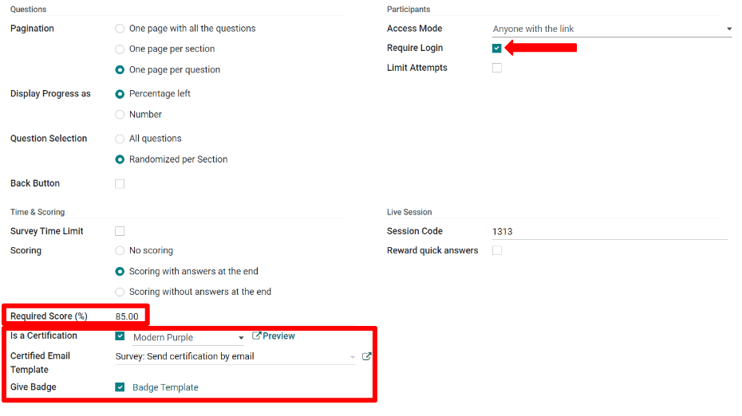
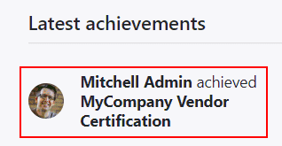

Puntaje de las encuestas¶
Para tener una métrica del rendimiento, conocimiento y satisfacción general del participante, Odoo asigna puntos a las respuestas de las encuestas. Al final de la encuesta, estos puntos se suman dando como resultado el puntaje final.
Para agregar puntos a las encuestas, abra la aplicación Encuestas, seleccione el formulario de encuesta que desee y haga clic en la pestaña de Opciones. En la sección Puntaje, seleccione entre las opciones de Puntaje con respuestas al final o Puntaje sin respuestas al final.
Puntaje con respuestas al final le muestra al participante sus respuestas correctas e incorrectas después de haber terminado la encuesta. En las preguntas donde respondió incorrectamente, la respuesta correcta estará resaltada.
Puntaje sin respuestas al final no le muestra al participante sus respuestas después de terminar la encuesta, solo aparece su puntaje final.
Para indicar cuáles son las respuestas correctas, haga clic en la Pestaña de preguntas y elija una pregunta. En el formulario de preguntas, seleccione la casilla Respuesta correcta para la opción correcta y agregue un valor de puntuación.
En la pestaña Opciones de la encuesta, establezca el Porcentaje del puntaje obligatorio. El porcentaje que introduzca determina el porcentaje correcto de respuestas correctas para aprobar la encuesta.
Más adelante en la pestaña de Opciones de la encuesta, los administradores de la misma también pueden convertir la encuesta en una certificación. Una certificación indica que la encuesta contiene preguntas que ponen a prueba el nivel de conocimiento del participante sobre un tema.
Al activar la opción de Es una certificación, seleccione también una Plantilla de correo electrónico de la certificación. Se enviará automáticamente la certificación usando esa plantilla de correo a los usuarios que aprobaron la encuesta con un puntaje final que sea mayor o igual al que estableció en Porcentaje de puntuación obligatorio.
En la sección de Participantes, puede pedirle a los participantes que inicien sesión para realizar la encuesta. Si está activada la opción de Se requiere inicio de sesión, aparecerán dos nuevas opciones: la casilla de Límitar intentos, lo que limíta el número de veces que un participante puede intentar realizar la encuesta, y la opción Dar insignia, ubicada debajo de las opciones de Certificación en la sección de Puntaje.
Las insignias se muestran en la sección de eLearning del portal del usuario y son una forma de establecer objetivos y premiar a los participantes por aprobar las encuestas o ganar puntos. Además del participante premiado, los visitantes del sitio web que accedan a la página de Cursos también podrán ver las insignias.
Ver también